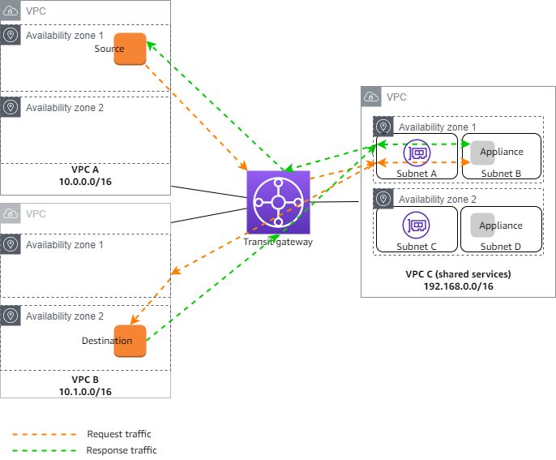

- No automatic route propagation
- Requires static routes in VPC route table pointing to TGW
- CIDR blocks of the VPC can be propagated to TGW route table
- Supports both IPv4 and IPv6 routes
VPN with BGP:
- Advertised routes automatically appear in route table
- BGP ASN required for configuration
- Supports route filtering and AS path prepending
- Automatic failover with multiple tunnels
- Supports ECMP for load balancing
- Maximum 100 BGP routes per VPN connection
Direct Connect Gateway:
- Allowed prefixes configured at DX Gateway
- BGP communities for route control
- Supports route aggregation
- Automatic propagation of allowed prefixes
- Supports BGP path selection
- MD5 authentication for BGP sessions
Transit Gateway Connect:
- Automatic route propagation enabled by default
- Supports GRE encapsulation
- Routes learned via BGP over GRE tunnel
- Supports multiple GRE tunnels per attachment
- Automatic health checking of tunnels
- Maximum 5000 routes per Connect attachment
Transit Gateway Peering:
- No automatic route propagation
- Requires static routes in both TGW route tables
- Cross-region routes must be manually configured
- Cannot exceed 3 levels of TGW peering
- Routes must be unique across peered TGWs
- Supports both IPv4 and IPv6 routes
You can configure your transit gateway as a centralized router that connects all of your VPCs, AWS Direct Connect, and Site-to-Site VPN connections. In this scenario, all attachments are associated with the transit gateway default route table and propagate to the transit gateway default route table. Therefore, all attachments can route packets to each other, with the transit gateway serving as a simple layer 3 IP router.
Pattern Overview
Centralized Router Pattern:
Functions as a simple layer 3 IP router
Connects all network types:
VPCs
AWS Direct Connect
Site-to-Site VPN connections
Routing Configuration:
All attachments associate with default route table
5. VPC-B route table matches local route → delivers to destination EC2
6. Return traffic follows same process in reverse
Key Design Considerations
Routing:
All VPCs see all other VPC routes
On-premises sees all VPC routes
VPCs see on-premises routes
No route filtering or isolation
Security:
Security groups and NACLs still apply
Consider VPC security boundaries
Monitor cross-VPC traffic
Scaling:
Route table limits per TGW
Routes per route table limits
Attachment limits
Exam Tips
Remember:
Full mesh connectivity by default
Single route table for all attachments
Route propagation enabled for all attachments
VPCs need only default route to TGW
Common Questions:
Route propagation behavior
Traffic flow patterns
Route table configurations
Connectivity between different network types
Transit Gateway Pattern: Isolated VPCs
You can configure your transit gateway as multiple isolated routers. This is similar to using multiple transit gateways, but provides more flexibility in cases where the routes and attachments might change. In this scenario, each isolated router has a single route table. All attachments associated with an isolated router propagate and associate with its route table. Attachments associated with one isolated router can route packets to each other, but cannot route packets to or receive packets from the attachments for another isolated router.
Pattern Summary
Isolated VPCs Pattern:
Creates network isolation between VPCs
Each VPC can connect only to on-premises network
No VPC-to-VPC communication allowed
Uses multiple route tables to enforce isolation
Common in regulated environments or multi-tenant architectures
Architecture Components
Transit Gateway Configuration:
Multiple route tables (one per VPC plus one for VPN)
Destination Target Type
172.16.0.0/16 VPN-Attachment propagated
VPC-B Route Table:
Destination Target Type
172.16.0.0/16 VPN-Attachment propagated
VPC Route Tables:
VPC-A (10.1.0.0/16):
Destination Target
10.1.0.0/16 local
0.0.0.0/0 tgw-id
VPC-B (10.2.0.0/16):
Destination Target
10.2.0.0/16 local
0.0.0.0/0 tgw-id
On-premises Router BGP Table:
Example entries:
Network Next Hop AS Path
10.1.0.0/16 VPN-Tunnel-1-IP AWS-ASN
10.2.0.0/16 VPN-Tunnel-1-IP AWS-ASN
10.3.0.0/16 VPN-Tunnel-1-IP AWS-ASN
Traffic Flow Examples
Scenario 1: On-premises to VPC-A
1. On-premises (172.16.1.10) sends packet to VPC-A (10.1.1.10)
2. Packet arrives at TGW through VPN attachment
3. VPN route table matches 10.1.0.0/16 → forwards to VPC-A
4. VPC-A receives packet through TGW ENI
Scenario 2: VPC-A to VPC-B (Blocked)
1. VPC-A (10.1.1.10) sends packet to VPC-B (10.2.1.10)
2. Packet arrives at TGW
3. VPC-A route table has no route to 10.2.0.0/16
4. Packet is dropped
Key Design Considerations
Route Table Design:
Each VPC needs its own TGW route table
VPN attachment needs separate route table
Careful route propagation configuration required
No transitive routing between VPCs
Security:
Network isolation through route tables
Additional security through NACLs and security groups
Clear traffic boundaries
Scaling Considerations:
One route table per VPC
Route propagation management complexity
Association/propagation limits
Exam Tips
Remember:
Multiple route tables required
Selective route propagation
No VPC-to-VPC communication
Only on-premises connectivity allowed
Common Scenarios:
Multi-tenant environments
Regulatory compliance requirements
Security isolation needs
Route table configuration verification
Transit Gateway Pattern: Isolated VPCs with Shared Services
You can configure your transit gateway as multiple isolated routers that use a shared service. This is similar to using multiple transit gateways, but provides more flexibility in cases where the routes and attachments might change. In this scenario, each isolated router has a single route table. All attachments associated with an isolated router propagate and associate with its route table. Attachments associated with one isolated router can route packets to each other, but cannot route packets to or receive packets from the attachments for another isolated router. Attachments can route packets to or receive packets from the shared services. You can use this scenario when you have groups that need to be isolated, but use a shared service, for example a production system.
Pattern Summary
Isolated VPCs with Shared Services Pattern:
Maintains isolation between VPCs
Allows access to common shared services VPC
Enables on-premises network connectivity
Uses multiple route tables with selective routing
Common in enterprise environments with centralized services (DNS, Active Directory, security services)
1. On-premises (172.16.1.10) sends to Shared Services (10.0.1.10)
2. VPN attachment routes through TGW
3. VPN route table matches Shared Services CIDR
4. Traffic reaches Shared Services VPC
Key Design Considerations
Route Table Strategy:
Careful route propagation planning
Shared Services VPC needs routes to all VPCs
Isolated VPCs only get Shared Services routes
On-premises gets routes to all VPCs
Security Considerations:
Security groups in Shared Services VPC
Network ACLs for additional control
Consider service endpoints in Shared Services VPC
Monitor access patterns
Scaling Aspects:
Route table limits per TGW
Route propagation management complexity
Shared Services VPC capacity planning
Consider regional services distribution
Exam Tips
Key Points:
Multiple route tables with specific propagation
Shared Services VPC accessible by all
VPCs remain isolated from each other
On-premises access to all VPCs
Common Scenarios:
Enterprise shared services deployment
Centralized security services
DNS and Directory Services
Compliance with isolation requirements
Route Table Focus:
Understand propagation patterns
Know which routes each VPC needs
Recognize traffic flow patterns
Identify blocked vs allowed paths
Transit Gateway Pattern: Peered Transit Gateways
You can create a transit gateway peering connection between transit gateways and route traffic between their attachments. This enables communication between VPCs and on-premises networks across regions through transit gateway peering. Each transit gateway maintains its own route tables, and static routes are used to direct traffic through the peering connection.
Pattern Summary
Use Case:
Cross-region VPC connectivity
Shared VPN access across regions
Regional network isolation with controlled inter-region access
Figure: TGW Peering
Route Tables
VPC Route Tables:
VPC A (10.0.0.0/16):
Destination Target
10.0.0.0/16 local
0.0.0.0/0 tgw-1-id
VPC B (10.2.0.0/16):
Destination Target
10.2.0.0/16 local
0.0.0.0/0 tgw-1-id
Transit Gateway 1 Route Table:
Destination Target Route Type
10.0.0.0/16 Attachment ID for VPC A propagated
10.2.0.0/16 Attachment ID for VPC B propagated
0.0.0.0/0 Attachment ID for TGW peering static
Transit Gateway 2 Route Table:
Destination Target Route Type
172.31.0.0/24 Attachment ID for VPN propagated
10.0.0.0/16 Attachment ID for TGW peering static
10.2.0.0/16 Attachment ID for TGW peering static
Customer Gateway BGP Table:
Network Next Hop Path
10.0.0.0/16 TGW-2 VPN Interface ASN TGW-2, ASN TGW-1
10.2.0.0/16 TGW-2 VPN Interface ASN TGW-2, ASN TGW-1
172.31.0.0/24 Local Local
Traffic Flow Examples
Scenario: VPC A to Internet via VPN
1. Instance in VPC A (10.0.1.10) sends traffic to internet (8.8.8.8)
2. VPC A route table sends to TGW-1 (0.0.0.0/0 → tgw-1-id)
3. TGW-1 route table matches 0.0.0.0/0 → forwards to TGW-2 via peering
4. TGW-2 route table forwards to VPN attachment
5. Traffic reaches customer gateway and exits to internet
Scenario: VPC A to VPC B
1. Instance in VPC A (10.0.1.10) sends to VPC B (10.2.1.10)
2. VPC A route table sends to TGW-1 (0.0.0.0/0 → tgw-1-id)
3. TGW-1 route table matches 10.2.0.0/16 → forwards directly to VPC B attachment
4. Traffic reaches VPC B via local route
Key Limitations
Cannot peer transit gateways in same region
No transitive routing through peering connection
Maximum 50 peering attachments per transit gateway
Static routes required for peering (no automatic propagation)
CIDR ranges cannot overlap between peered networks
Exam Tips
Remember:
Each TGW maintains separate route tables
Static routes needed for peering communication
BGP routes propagate to customer gateway
Cross-region traffic flows through peering attachment
Transit Gateway Pattern: Centralized Outbound Routing to Internet
You can configure a transit gateway to route outbound internet traffic from VPCs without internet gateways through a centralized VPC containing a NAT gateway. This pattern provides centralized control over internet access and can reduce costs by sharing NAT gateways across multiple VPCs.
Pattern Summary
Use Case:
Centralized internet access for multiple VPCs
Shared NAT gateway resources
Consolidated internet egress monitoring
Simplified security controls for outbound traffic
Figure: Centralized NAT
Route Tables
VPC Route Tables:
VPC A - Private Subnets (10.0.0.0/16):
Destination Target
10.0.0.0/16 local
0.0.0.0/0 tgw-id
VPC B - Private Subnets (10.1.0.0/16):
Destination Target
10.1.0.0/16 local
0.0.0.0/0 tgw-id
VPC C - Public Subnet with NAT Gateway (192.168.0.0/16):
Destination Target
192.168.0.0/16 local
10.0.0.0/16 tgw-id
10.1.0.0/16 tgw-id
0.0.0.0/0 igw-id
VPC C - Private Subnet for TGW Attachment (192.168.0.0/16):
Destination Target
192.168.0.0/16 local
0.0.0.0/0 nat-gateway-id
Transit Gateway Route Table:
Destination Target Route Type
10.0.0.0/16 Attachment ID for VPC A propagated
10.1.0.0/16 Attachment ID for VPC B propagated
192.168.0.0/16 Attachment ID for VPC C propagated
0.0.0.0/0 Attachment ID for VPC C static
Traffic Flow Examples
Scenario: VPC A to Internet
1. Instance in VPC A (10.0.1.10) sends traffic to internet (8.8.8.8)
2. VPC A route table sends to TGW (0.0.0.0/0 → tgw-id)
3. TGW route table matches 0.0.0.0/0 → forwards to VPC C attachment
6. NAT Gateway sends through IGW using its Elastic IP
Scenario: VPC A to VPC B
1. Instance in VPC A (10.0.1.10) sends to VPC B (10.1.1.10)
2. VPC A route table sends to TGW (0.0.0.0/0 → tgw-id)
3. TGW route table matches 10.1.0.0/16 → forwards to VPC B attachment
4. Traffic reaches VPC B via local route
Key Limitations
NAT Gateway bandwidth limits apply
NAT Gateway per-AZ deployment required for HA
All internet traffic flows through central VPC
Cross-AZ data transfer costs in central VPC
TGW attachment must be in private subnet
IGW must be attached to central VPC
Exam Tips
Remember:
TGW attachment must be in private subnet of central VPC
NAT Gateway must be in public subnet
IGW required only in central VPC
Static route (0.0.0.0/0) in TGW points to central VPC
Common Scenarios:
Shared internet access for development VPCs
Centralized internet access logging
Cost optimization for NAT Gateway usage
Simplified security controls
Transit Gateway Pattern: Appliance in a Shared Services VPC
You can configure an appliance (such as a security appliance) in a shared services VPC where all traffic between transit gateway attachments is inspected by the appliance. Appliance mode ensures bidirectional traffic is routed symmetrically through the same Availability Zone for stateful inspection.
Pattern Summary
Use Case:
Centralized security inspection
Stateful firewall deployment
IDS/IPS implementation
Traffic inspection requirements

Figure: Centralized with Appliance
Route Tables
VPC Route Tables:
VPC A - Private Subnets (10.0.0.0/16):
Destination Target
10.0.0.0/16 local
0.0.0.0/0 tgw-id
VPC B - Private Subnets (10.1.0.0/16):
Destination Target
10.1.0.0/16 local
0.0.0.0/0 tgw-id
VPC C (Shared Services) - Subnet A (TGW Attachment) (192.168.0.0/16):
Destination Target
192.168.0.0/16 local
0.0.0.0/0 appliance-eni-id # Routes to security appliance
VPC C (Shared Services) - Subnet B (Appliance Subnet):
Destination Target
192.168.0.0/16 local
0.0.0.0/0 tgw-id # Routes back to transit gateway
Transit Gateway Route Tables:
VPC A and B Route Table:
Destination Target Route Type
0.0.0.0/0 Attachment ID for VPC C static # All traffic to shared services VPC
Shared Services VPC (VPC C) Route Table:
Destination Target Route Type
10.0.0.0/16 Attachment ID for VPC A propagated
10.1.0.0/16 Attachment ID for VPC B propagated
Traffic Flow Examples
Scenario: VPC A to VPC B with Inspection
1. Instance in VPC A (10.0.1.10) sends to VPC B (10.1.1.10)
2. VPC A route table sends to TGW (0.0.0.0/0 → tgw-id)
3. TGW routes to VPC C (Shared Services) via 0.0.0.0/0 static route
4. Traffic arrives in VPC C Subnet A
5. Routed to security appliance (0.0.0.0/0 → appliance-eni-id)
6. Appliance inspects traffic and forwards
7. Traffic returns to TGW (0.0.0.0/0 → tgw-id)
8. TGW routes to VPC B using propagated route
9. Return traffic follows same path in reverse (same AZ due to appliance mode)
Key Limitations
Must connect exactly one transit gateway to appliance VPC
Original Request: AZ1: VPC A → TGW → Appliance1 → TGW → VPC B
Return Traffic: AZ2: VPC B → TGW → Appliance2 → TGW → VPC A
Result: Connection fails - Different appliances see different flows
With Appliance Mode
Modified Behavior:
Transit gateway maintains flow symmetry
All traffic for a flow uses same AZ
Both directions processed by same appliance
AZ selection based on flow hash algorithm
Example Scenario:
1. Traffic from VPC A (AZ1) → Transit Gateway
2. Transit Gateway → Inspection VPC (AZ1)
3. Inspected by Appliance in AZ1
4. Transit Gateway → VPC B (AZ2)
5. Return traffic from VPC B (AZ2) → Transit Gateway
Original Request: AZ1: VPC A → TGW → Appliance1 → TGW → VPC B
Return Traffic: AZ1: VPC B → TGW → Appliance1 → TGW → VPC A
Result: Connection succeeds - Same appliance sees both flows
Key Differences Summary
Traffic Path:
Without Mode: Stays in source AZ, can cause asymmetric routing
With Mode: Maintains single AZ for entire flow
Appliance Selection:
Without Mode: Different appliances may handle request/response
With Mode: Same appliance handles entire flow
Connection State:
Without Mode: State tracking may fail
With Mode: State tracking maintained
Performance Impact:
Without Mode: Potentially lower latency (stays in source AZ)
With Mode: May cross AZs but ensures consistent handling
AWS Transit Gateway - Core Concepts
Key Features and Technologies
Cross-Account Networking:
AWS Resource Access Manager (RAM) Integration:
Share transit gateways across AWS accounts
Account owners can attach their VPCs to shared gateway
Both accounts can manage attachments
Enables centralized network management
Attachment Control:
Auto-accept shared attachments option
Manual acceptance/rejection capability
Cross-account attachment monitoring
Multicast Support:
Multicast Domains:
Create dedicated multicast domains
Associate VPC attachments with domains
Configure multicast sources and group members
Enable one-to-many communication
Use Cases:
Video distribution
Financial data distribution
Gaming and live streaming
IoT data broadcasting
IP Addressing Support:
IPv4 Capabilities:
CIDR block size /24 or larger
Public and private IP ranges
Used for VPC attachments
Support for VPN connections
IPv6 Capabilities:
CIDR block size /64 or larger
Dual-stack support
Native IPv6 routing
IPv6 VPC attachment support
Routing Technologies:
Dynamic Routing:
BGP support for VPN connections
Automatic route propagation
ECMP (Equal Cost Multi-Path) support
Route consistency checking
Static Routing:
Manual route definition
Required for peering attachments
Supported for all attachment types
Prefix-based routing control
Route Management:
Route table associations
Route propagation control
Blackhole routes for traffic control
Route priority handling
Advanced Networking Features:
VPN ECMP:
Load balancing across multiple VPN tunnels
Requires matching BGP ASN and attributes
Supports dynamic routing only
Improves VPN reliability and throughput
DNS Support:
Cross-VPC DNS resolution
Private DNS resolution
Integration with Route 53 Resolver
Support for hybrid DNS architectures
AWS Transit Gateway - Configuration and Architecture
Core Configuration Components
Transit Gateway Route Tables:
Default Route Table:
Created automatically during gateway setup
Serves as default association route table
Serves as default propagation route table
Can be disabled during creation
Custom Route Tables:
Support network segmentation
Enable isolated routing domains
Allow different routing policies per segment
Similar to VRF functionality
Autonomous System Configuration:
ASN Options:
16-bit ASN range: 64512 to 65534
32-bit ASN range: 4200000000 to 4294967294
Used for BGP sessions with connected networks
Recommended unique ASN per region in multi-region deployments
Attachment Types and Configuration
VPC Attachments:
Configuration Options:
DNS support for cross-VPC resolution
Security group referencing across VPCs
Subnet association requirements
Appliance mode options
Routing Control:
Association with specific route tables
Route propagation settings
Support for IPv4 and IPv6 routes
VPN Attachments:
ECMP Configuration:
Equal Cost Multi-Path routing support
Requires matching BGP attributes
Only for dynamic routing VPNs
Enables load balancing across tunnels
VPN Types:
Site-to-Site VPN connections
Dynamic routing (BGP) support
Static routing options
Multiple tunnel configurations
Connect Attachments:
CIDR Management:
IPv4: /24 or larger blocks
IPv6: /64 or larger blocks
Cannot overlap with VPC or on-premises ranges
Excluded ranges: 169.254.0.0/16
GRE Tunneling:
Support for GRE protocol
IP assignment for tunnel endpoints
MTU considerations
Encryption options
Advanced Features Configuration
Multicast Configuration:
Domain Setup:
Multicast domain creation
Source configuration
Group membership management
VPC association rules
Traffic Management:
Bandwidth allocation
Group address management
Source filtering options
IGMPv2 support
Cross-Account Management:
Resource Sharing:
AWS RAM configuration
Permission management
Attachment acceptance settings
Resource-based policies
Monitoring and Control:
Attachment status tracking
Cross-account metrics
Billing and cost allocation
Security boundary enforcement
AWS Transit Gateway - Operations and Routing Behavior
Route Processing and Propagation
Route Evaluation Hierarchy:
Route Priority:
Static routes take precedence over propagated routes
Most specific route match (longest prefix) wins
Equal cost routes enable ECMP routing
Blackhole routes override other routes
Route Propagation Rules:
VPC routes propagate automatically when enabled
VPN routes propagate based on BGP configuration
Direct Connect routes follow BGP attributes
Peering connections require static routes
Route Table Association:
Association Behavior:
Each attachment associates with exactly one route table
Default association can be disabled
Custom associations override default
Changes take effect immediately
Route Limits:
Maximum routes per route table
Propagation limits per attachment
Static route entry limits
CIDR aggregation recommendations
Traffic Flow Patterns
East-West Traffic:
VPC-to-VPC Communication:
Direct routing between attached VPCs
Support for transitive routing
Security group referencing capabilities
Cross-account communication patterns
Isolation Mechanisms:
Route table segmentation
Attachment associations
Blackhole routes for traffic control
Security group boundaries
North-South Traffic:
Internet-Bound Traffic:
Through VPC Internet Gateways
Via centralized egress VPCs
NAT Gateway integration
Security inspection options
On-Premises Connectivity:
VPN attachment routing
Direct Connect integration
Hybrid DNS resolution
Route propagation from on-premises
Advanced Routing Scenarios
Multi-Region Architectures:
Inter-Region Routing:
Transit Gateway peering
Cross-region attachment support
Global network architecture
Regional route isolation
Route Aggregation:
CIDR summarization strategies
Regional route tables
Route propagation control
Path selection optimization
Failover and High Availability:
Path Redundancy:
Multiple VPN tunnels
ECMP load balancing
Active/active configurations
Automatic failover behavior
Health Monitoring:
BGP keepalive detection
VPN tunnel monitoring
Attachment status checking
Route availability monitoring
Multicast Operations:
Traffic Distribution:
Source to group mapping
Multicast routing protocols
Bandwidth management
Group membership handling
Domain Management:
Source registration
Member management
Domain associations
Traffic monitoring
AWS Transit Gateway - Monitoring and Troubleshooting
Monitoring Tools and Metrics
CloudWatch Integration:
Core Metrics:
BytesIn/BytesOut per attachment
PacketsIn/PacketsOut per attachment
PacketDropCount for blackholed packets
BytesDropCount for failed traffic
Attachment Metrics:
Connection state monitoring
Tunnel status for VPN attachments
BGP session status
Route table capacity utilization
VPC Flow Logs:
Traffic Analysis:
Source and destination traffic patterns
Protocol-level information
Traffic acceptance/rejection status
Interface-level monitoring
Log Integration:
CloudWatch Logs integration
S3 bucket storage options
Kinesis Data Firehose delivery
Log retention configuration
Troubleshooting Tools
Route Analysis:
Route Table Tools:
Route propagation verification
Route association checking
CIDR overlap detection
Route consistency validation
Reachability Analyzer:
Path analysis between resources
Configuration validation
Security group and NACL verification
Routing path visualization
Network Analysis:
VPC Network Access Analyzer:
Network security analysis
Access path verification
Policy validation
Compliance checking
Traffic Mirroring:
Packet-level analysis
Security monitoring
Content inspection
Troubleshooting capabilities
Common Issues and Resolution
Connectivity Issues:
Route Propagation Problems:
Route table association verification
Propagation enablement checking
CIDR overlap resolution
BGP configuration validation
Attachment Issues:
VPN tunnel status verification
BGP neighbor relationship checking
Security group compatibility
Subnet route table validation
Performance Issues:
Bandwidth Constraints:
Attachment throughput monitoring
ECMP load balancing verification
VPN tunnel utilization
Quota and limit checking
Latency Analysis:
Path optimization verification
Cross-AZ traffic analysis
Regional routing efficiency
Network performance metrics
Operational Best Practices
Monitoring Strategy:
Metric Collection:
Key metric identification
Alarm threshold setting
Dashboard creation
Log aggregation strategy
Alerting Framework:
Critical alert definition
Escalation procedures
Response automation
Notification configuration
Maintenance Procedures:
Regular Health Checks:
Route table auditing
Attachment status verification
Security configuration review
Performance baseline monitoring
Change Management:
Configuration backup procedures
Version control practices
Change impact assessment
Rollback procedures
AWS Transit Gateway - Security and Compliance
Network Security Architecture
Security Boundaries:
Network Isolation:
Route table segmentation
VPC attachment isolation
Cross-account boundaries
Multi-Region security domains
Traffic Control:
Blackhole routes for traffic blocking
Route propagation control
Attachment acceptance policies
VPC security group integration
Security Group Integration:
Cross-VPC References:
Security group referencing across VPCs
Centralized security policy management
Resource-based security rules
Transitive security group relationships
Security Group Scope:
VPC-level security boundaries
Attachment-specific rules
Cross-account security policies
Rule propagation limitations
Encryption and Data Protection
In-Transit Encryption:
VPN Encryption:
IPSec tunnel encryption
Key management for VPN connections
Perfect Forward Secrecy support
Custom encryption algorithms
Direct Connect Encryption:
MACSec encryption support
Transit Gateway Connect encryption
Private VIF security
End-to-end encryption options
Key Management:
AWS KMS Integration:
Customer managed keys
Automatic key rotation
Encryption context support
Cross-account key policies
Certificate Management:
ACM integration
Private certificate authorities
Certificate rotation
Validation and monitoring
Access Control and Authentication
IAM Integration:
Resource-Level Permissions:
Transit Gateway resource policies
Attachment-specific permissions
Route table management rights
Cross-account access controls
Service Control Policies:
Organization-wide controls
Account-level restrictions
Permission boundaries
Tag-based access control
Network Access Control:
Network ACLs:
Subnet-level filtering
Stateless packet filtering
Protocol-based controls
CIDR-based restrictions
Route Control:
Prefix list management
Route table policies
Propagation controls
Blackhole routing
Compliance and Governance
Compliance Standards:
Regulatory Compliance:
PCI DSS requirements
HIPAA compliance
SOC compliance
ISO certifications
Security Standards:
AWS security best practices
Industry security frameworks
Network security baselines
Compliance reporting
Audit and Logging:
CloudTrail Integration:
API activity logging
Management event tracking
Resource-level logging
Cross-account logging
Compliance Monitoring:
AWS Config rules
Compliance auditing
Resource tracking
Change management logging
AWS Transit Gateway - Direct Connect Integration
Integration Overview
Architecture Components:
Direct Connect Gateway:
Global resource that connects Direct Connect to Transit Gateway
Acts as intermediary between Transit Gateway and Direct Connect connections
Can associate with multiple Transit Gateways across different regions
Maximum of 20 Transit Gateway associations per Direct Connect Gateway
Integration Flow:
1. Create Direct Connect Gateway
2. Create Transit Virtual Interface (Transit VIF)
3. Associate Transit Gateway with Direct Connect Gateway
4. Configure route tables and propagation
Connection Types and Setup
Transit Virtual Interface (Transit VIF):
Purpose:
Dedicated VIF type for Transit Gateway connectivity
Enables access to multiple VPCs through single interface